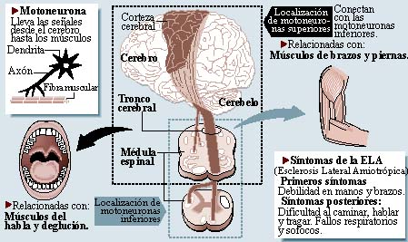

La debilidad muscular implica dificultad a la hora de andar y la dificultad de coordinación en alguna de sus extremidades (las manos, especialmente, en lo que se refiere a inconvenientes a la hora de realizar determinadas actividades cotidianas). La extensión de ese debilitamiento y de la parálisis al tronco termina por provocar problemas para masticar, tragar y respirar, llegándose a la necesidad, a este último respecto, de recurrir a la ventilación mecánica.
Progresivamente, aparecen movimientos musculares anormales como fasciculaciones, espasmos, sacudidas, calambres o debilidad, o una anormal pérdida de masa muscular o de peso corporal. La progresión de la enfermedad es normalmente irregular, es decir, asimétrica (la enfermedad progresa de modo diferente en cada parte del cuerpo). A veces, la progresión es muy lenta, desarrollándose a los largo de los años y teniendo períodos de estabilidad con un variable grado de incapacidad.
En ningún momento se afectan las facultades intelectuales, ni los órganos de los sentidos (oído, vista, gusto u olfato) ni hay afectación de los esfínteres ni de la función sexual. La enfermedad cursa sin dolor aunque la presencia de calambres y la pérdida de la movilidad y función muscular acarrean cierto malestar. En cualquier caso, esta sensación suele desaparecer con la medicación específica y el ejercicio. En algunos casos, aparecen síntomas relacionados con alteraciones de la afectividad (llanto, risas inapropiadas o, en general, respuestas emocionales desproporcionadas como reacción a la afectación física) denominados labilidad emocional y que en ningún caso significa que exista un auténtico problema psiquiátrico.
